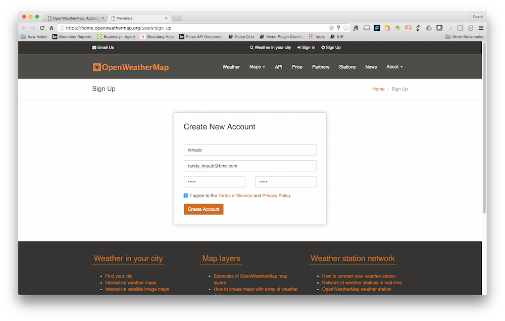
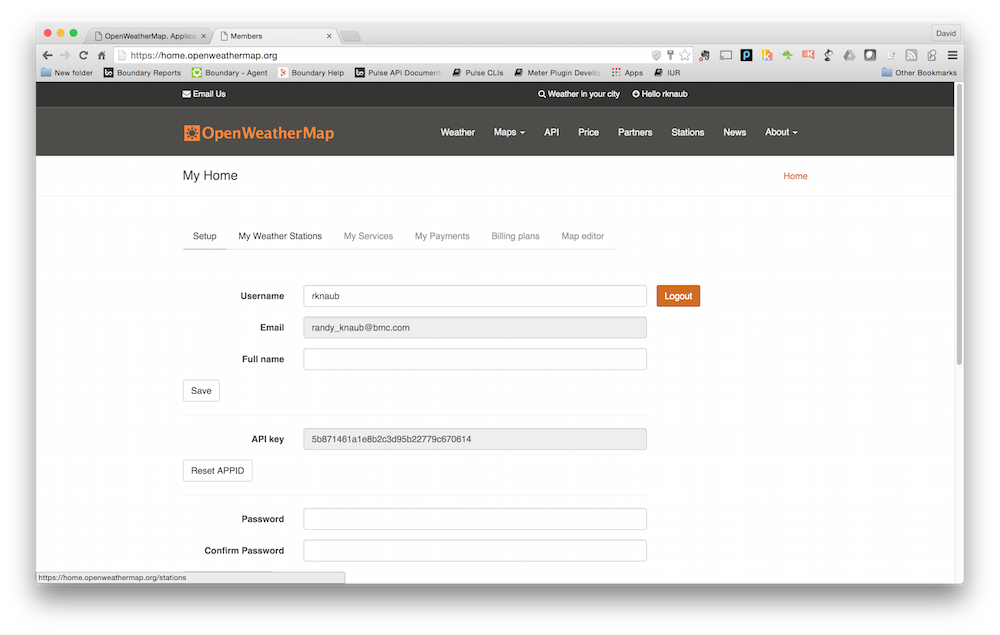

Prerequisites
This section describes the hardware, software, and network resources required to complete the accompanying lab exercises.
Network
- Must have access to the internet so that software components required by the Virtual Machine can be downloaded. https://truesight-staging.bmc.com
Hardware
- Laptop/Desktop running Mac OS X 10.10.5 or later, or Windows 7 or later.
- Laptop/Desktop must have at least 8GB ram.
- Laptop/Desktop must have at least 2GB of free disk space.
Software
Download each piece of software below for your OS and install each piece with the default instructions and locations
- Vagrant 1.7.2 or later. Vagrant can be downloaded here
- VirtualBox 4.3.2.6 or later. VirtualBox can be downloaded here
- Chrome Browser latest version. Chrome can be downloaded from here
- Git 2.2 or later. Git can be downloaded here. When installing Git on Windows there are special instructions as described in the next section.
Git On Windows
NOTE: If you are Mac OS X user you can skip this and proceed to the Next section at bottom of the page, sorry Windows people we have some special instructions for you on how to install Git on your system. We promise this is the last time you will have to pay your penance for you Windows ways, since going forward, the instructions for all the platforms will be the same.
When using the Git installer make sure you select the options in the installation shown in the next sections.
Adjusting your PATH environment

Configure the line ending conversions

Configure the terminal emulator to use with Git Bash

API Keys
For the following labs you will need to create a API keys to access to their data:
Sections below provide details on how create API keys.
Open Weather Map
- Click on the link here and click on the orange button labeled Sign up which will display the following: 
- Complete the form and click on the Create Account button which then displays the API key: 
- Click the link here. and click on the button labeled
Create New App in the right-hand side of the page:

- Complete the form with a unique name, description, and
http://www.bmc.comfor Website. - Click on the check box Yes, I agree to accept the developer agreement and click on the button labeled Create your Twitter
application:

- The new application is created.
- Next click on the tab labeled Keys and Access Tokens to display:
- Click on the button labeled Generate My Access Token which then displays the access tokens:
Next
Click Next (upper right) when completed with download and installation of all components on this page.